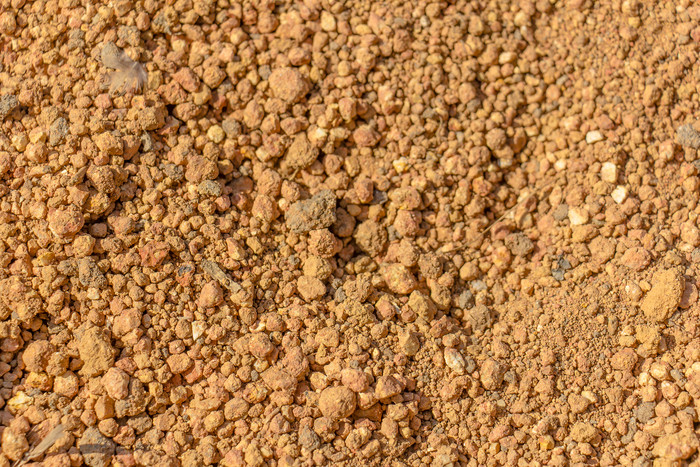
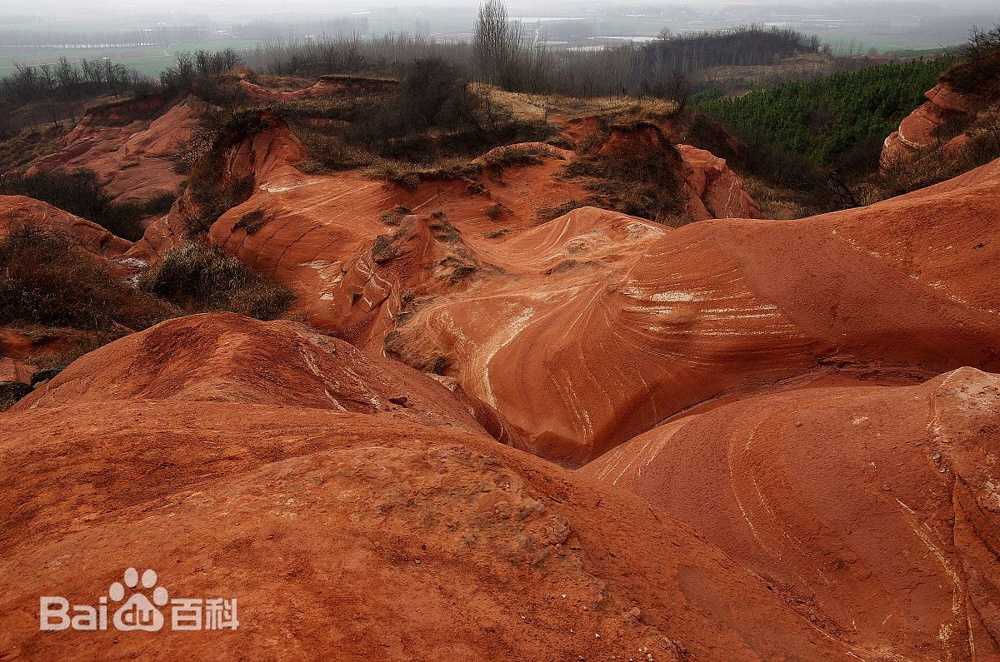

土壤状况数据库
北方地区
黑龙江省
内蒙古自治区
北京市
天津市
吉林省
辽宁省
河北省
河南省
山东省
山西省
南方地区
福建省
浙江省
海南省
江苏省
广东省
广西壮族自治区
安徽省
湖北省
湖南省
上海市
江西省
西北地区
新疆维吾尔自治区
甘肃省
陕西省
青海省
宁夏回族自治区
西南地区
西藏自治区
云南省
贵州省
重庆市
四川省

北方地区


南方地区


西北地区


西南地区


黑龙江省
| 地理位置 | 黑龙江省 |
|---|---|
| 经度 | 121°11′E-135°05′E |
| 纬度 | 43°25′N-53°33′N |
| 土壤类型 | 黑土 |
| 质地 | 黑土、暗棕壤、草甸土 |
| 有机物含量 | 0.3 |
| 酸碱度（PH） | 5.5-6.5 |
| 有效微量元素含量 | 氮 0.12%，磷 0.11%，钾 1.5%-2.4% |
| 保水性 | 好 |
内蒙古自治区
| 地理位置 | 内蒙古自治区 |
|---|---|
| 经度 | 126°04′-97°12′E |
| 纬度 | 37°24′-53°23′N |
| 土壤类型 | 棕壤 |
| 质地 | 质地偏粘，多为壤质粘土 |
| 有机物含量 | 0.0106 |
| 酸碱度（PH） | 6.5-7.8 |
| 有效微量元素含量 | 全氮0.060%，全磷0.053%，全钾2.49%，速效磷5ppm，速效钾114ppm |
| 保水性 | 差 |
北京市
| 地理位置 | 北京市 |
|---|---|
| 经度 | 116°20′E |
| 纬度 | 39°56′N |
| 土壤类型 | 棕壤 |
| 质地 | 粘壤土一壤质粘土 |
| 有机物含量 | 0.0571 |
| 酸碱度（PH） | ６．０一６．５ |
| 保水性 | 较好 |
天津市
| 地理位置 | 天津市 |
|---|---|
| 经度范围 | 116°43′R－118°194′E |
| 纬度范围 | 38°34′N－40°15′N |
| 土壤类型 | 潮土、水稻土 |
| 壤质 | 粘土 |
| 有机物含量 | 1%-5% |
| 酸碱度（PH） | 4.5-9.0 |
| 保水性 | 较好 |
吉林省
| 地理位置 | 吉林省 |
|---|---|
| 经度范围 | 121°38′E～131°19′E |
| 纬度范围 | 40°52′N～46°18′N |
| 土壤类型 | 暗棕壤 |
| 质地 | 粘土 |
| 有机物含量 | 3%-15% |
| 酸碱度（PH） | 6.0-7.5 |
| 土壤养分含量 | 全氮：0.190%，全磷：0.051%，全钾：1.63% 碱解氮：128.0ppm，速效磷：5.7ppm，速效钾：142.7ppm |
| 土壤有效微量元素含量 | 铜：0.83ppm，锌：0.81ppm，铁：31.6ppm，锰：22.4ppm，硼：0.31ppm，钼：0.17ppm |
| 保水性 | 好 |
辽宁省
| 地理位置 | 辽宁省 |
|---|---|
| 经度 | 118°53′E |
| 纬度 | 38°43′N |
| 土壤类型 | 棕壤 |
| 质地 | 砂质壤土、粘质壤土 |
| 有机物含量 | 0.5%-2% |
| 酸碱度（PH） | 5.3—6.2 |
| 土壤养分含量 | 全氮：0.458%，全磷：0.060%，全钾：1.91% 速效磷：7ppm，速效钾：153ppm |
| 保水性 | 较好 |
河北省
| 地理位置 | 河北省 |
|---|---|
| 经度范围 | 113°04'E-119°53'E |
| 纬度范围 | 36°01'N-42°37'N |
| 土壤类型 | 黄土 |
| 土壤分类 | 棕壤 |
| 有机物含量 | 1.22%-3.29% |
| 酸碱度（PH） | 6.5-7.5 |
| 保水性 | 较好 |
河南省
| 地理位置 | 河南省 |
|---|---|
| 经度范围 | 110°21’-115°E |
| 纬度范围 | 31°22-36°23’N |
| 土壤类型 | 黄褐土 |
| 壤质 | 潮土和褐土 |
| 有机物含量 | 0.0109 |
| 酸碱度（PH） | 6.5-7.7 |
| 土壤养分含量 | 全氮：0.074%，速效磷：4.3ppm，速效钾：135ppm |
| 保水性 | 较差 |

山东省
| 地理位置 | 山东省 |
|---|---|
| 经度范围 | 114°47.5′E~122°42.3′E |
| 纬度范围 | 34°23′N～38°17′N |
| 土壤类型 | 棕堰土 |
| 壤质 | 土体质地较均一，以砂质粘壤土为主，并有少量砾石 |
| 有机物含量 | 0.0078 |
| 酸碱度（PH） | 5.5-6.9 |
| 土壤养分含量 | 锌：1.1ppm，铜：12ppm，硼：0.31ppm，钼：0.14ppm，铁：25ppm，锰：42ppm |
| 保水性 | 中等 |
山西省
| 地理位置 | 山西省 |
|---|---|
| 经度范围 | 110°14'E——114°33'E |
| 纬度范围 | 34°34'N——40°43N |
| 土壤类型 | 宁武棕泥土 |
| 壤质 | 壤土，屑粒状结构，稍紧，润，根较多，有少量砾石侵入 |
| 有机物含量 | 0.1008 |
| 酸碱度（PH） | 6.91-8.06 |
| 土壤养分含量 | 锌：69.8ppm，锰：447ppm，铜：21.4ppm，硼：58.9ppm，钼：0.70ppm，铁：2.33% |
| 保水性 | 好 |
南方地区
福建省
| 地理位置 | 福建省 |
|---|---|
| 经度 | 118.05°E |
| 纬度 | 24.35°N |
| 土壤类型 | 赤红壤 |
| 质地 | 泥赤土 |
| 有机物含量 | 0.0306 |
| 酸碱度（PH） | 5.0-6.5 |
| 有效微量元素含量 | 全氮0.154%，全磷0.038%，全钾2.11%，速效磷13ppm，速效钾65ppm |
| 保水性 | 差 |
浙江省
| 地理位置 | 浙江省 |
|---|---|
| 经度 | 118°E-123°E |
| 纬度 | 27°12′N-31°31′N |
| 土壤类型 | 红壤 |
| 质地 | 粉砂质粘土至粘土 |
| 有机物含量 | 2.36%-4.8% |
| 酸碱度（PH） | 3.30-8.50 |
| 保水性 | 差 |
海南省
| 地理位置 | 海南省 |
|---|---|
| 经度范围 | 108°21′E~111°03′E |
| 纬度范围 | 19°20′N~20°10′N |
| 土壤类型 | 水稻土 |
| 壤质 | 砂土 |
| 有机物含量 | 0.48—2.71% |
| 酸碱度（PH） | 6.0—6.5 |
| 有效微量元素含量 | 铜：0.3ppm，锌：1.1ppm，锰：3.8ppm，钼、硼 |
| 保水性 | 好 |
江苏省
| 地理位置 | 江苏省 |
|---|---|
| 经度范围 | 116°18′E-121°57′E |
| 纬度范围 | 30°45′N-35°20′N |
| 土壤类型 | 水稻土、黄褐土 |
| 壤质 | 粘土 |
| 有机物含量 | 1%-5% |
| 酸碱度（PH） | 5.5-8.5 |
| 保水性 | 好 |
广东省
| 地理位置 | 广东省 |
|---|---|
| 经度范围 | 109°39′E～117°19′E |
| 纬度范围 | 20°13′N～25°31′N |
| 土壤类型 | 赤红壤 |
| 壤质 | 粘壤土至壤质粘土 |
| 有机物含量 | 0.0223 |
| 酸碱度（PH） | 4.5—5.0 |
| 土壤养分含量 | 全氮：0.101%，全磷：0.015%，全钾：1.10%，碱解氮：101.5 ppm，速效磷：3.2ppm，速效钾：55ppm |
| 保水性 | 差 |
广西壮族自治区
| 地理位置 | 广西壮族自治区 |
|---|---|
| 经度范围 | 104°26'―112°04'E |
| 纬度范围 | 20°54'―26°24'N |
| 土壤类型 | 紫色土 |
| 壤质 | 灰紫泥土，属石灰性紫色土亚类灰紫泥土土属 |
| 有机物含量 | 0.0137 |
| 酸碱度（PH） | 7.5-8.5 |
| 土壤养分含量 | 全氮：0.092%，全磷：0.052%，全钾：1.65%，速效磷：4.2ppm，速效钾：116ppm |
| 保水性 | 好 |
安徽省
| 地理位置 | 安徽省 |
|---|---|
| 经度范围 | 114°54′E一119°37′E |
| 纬度范围 | 29°41′N— 34°38′N |
| 土壤类型 | 黄壤、红壤 |
| 壤质 | 砂质土、壤土、粘土 |
| 有机物含量 | 1%-4% |
| 酸碱度（PH） | 4.13-9.43 |
| 保水性 | 一般 |

湖北省
| 地理位置 | 湖北省 |
|---|---|
| 经度范围 | 108°21′42″—116°07′50″E |
| 纬度范围 | 29°01′53″—33°6′47″N |
| 土壤类型 | 红壤 |
| 壤质 | 砂粒 粗砂粒 |
| 有机物含量 | 0.0144 |
| 酸碱度（PH） | 5.0—5.7 |
| 土壤养分含量 | 全氮0.074%，全磷0.123%，全钾1.83%，速效磷8.8ppm，速效钾104ppm，有效锌0.75ppm(n=9)，有效硼0.27ppm，有效铜1.28ppm，有效锰15.83ppm |
| 土壤质量评价 | 较好 |
湖南省
| 地理位置 | 湖南省 |
|---|---|
| 经度范围 | 108°47′～114°15′E |
| 纬度范围 | 24°38′～30°08′N |
| 土壤类型 | 红壤 |
| 壤质 | 红壤亚类灰红土土属 |
| 有机物含量 | 0.0209 |
| 酸碱度（PH） | 3.6-8.48 |
| 土壤养分含量 | 全氮0.127%，全磷0.047%，全钾1.72%，碱解氮101ppm，速效磷2.6ppm，速效钾132ppm；有效微量元素硼0.39ppm，锰28.5ppm，铜0.95ppm，锌0.72ppm，钼0.74ppm |
| 土壤质量评价 | 较好 |
上海市
| 地理位置 | 上海市 |
|---|---|
| 经度范围 | 120°52′-122°12′E |
| 纬度范围 | 30°40′-31°53′N |
| 土壤类型 | 水稻土、潮土 |
| 壤质 | 粘壤土、壤土 |
| 有机物含量 | 2%-5% |
| 酸碱度（PH） | 7.2-8.2 |
| 土壤质量评价 | 较好 |
江西省
| 地理位置 | 江西省 |
|---|---|
| 经度范围 | 113°34′-118°28′E |
| 纬度范围 | 24°29′-30°04′N |
| 土壤类型 | 红壤 |
| 壤质 | 粉砂质粘土至粘土 |
| 有机物含量 | 0.0409 |
| 酸碱度（PH） | 4.6-5.2 |
| 全氮含量 | 0.16% |
| 碱解氮含量 | 162ppm |
| 速效磷含量 | 3ppm |
| 速效钾含量 | 17ppm |
| 土壤质量评价 | 好 |
西北地区
新疆维吾尔自治区
| 地理位置 | 新疆维吾尔自治区甘肃省 |
|---|---|
| 经度范围 | 75°E~95°E |
| 纬度范围 | 35°N~50°N |
| 土壤类型 | 棕漠土 |
| 土壤分类 | 耕棕漠土亚类灌棕漠泥砂土土属 |
| 有机物含量 | 0.0102 |
| 酸碱度（PH） | 8.0一8.0 |
| 土壤养分含量 | 全氮：0.062%，速效磷：4ppm，速效钾：256ppm |
| 保水性 | 较好 |
甘肃省
| 地理位置 | 甘肃省 |
|---|---|
| 经度范围 | 92°13′—108°46′E |
| 纬度范围 | 32°11′—42°57′N |
| 土壤类型 | 水稻土 |
| 质地 | 砂质壤土或砂质粘壤土 |
| 有机物含量 | 0.0341 |
| 酸碱度（PH） | 5.5-5.8 |
| 土壤养分含量 | 全氮：0.179%，速效磷：10ppm，速效钾：76ppm；有效微量元素锌：1.15ppm、铜：1.55ppm、铁：106ppm、锰：17ppm、硼：0.14ppm、钼：0.17ppm |
| 保水性 | 差 |
陕西省
| 地理位置 | 陕西省 |
|---|---|
| 经度范围 | 105°29′E～111°15′E |
| 纬度范围 | 31°42′N～39°35′N |
| 土壤类型 | 新积土 |
| 有机物含量 | 0.0243 |
| 酸碱度（PH） | 8.4～8.6 |
| 保水性 | 较差 |
青海省
| 地理位置 | 青海省 |
|---|---|
| 经度范围 | 89°35′—103°04′E |
| 纬度范围 | 31°9′-39°19′N |
| 土壤类型 | 灰褐土 |
| 壤质 | 粘壤土及壤质粘土 |
| 有机物含量 | 0.1 |
| 酸碱度（PH） | 7．0—8．2 |
| 土壤养分含量 | 锌：2ppm，铜：0．86ppm，硼：0．99ppm，钼：0.09ppm，铁：95ppm，锰：41ppm，硒：2ppb |
| 保水性 | 好 |
宁夏回族自治区
| 地理位置 | 宁夏回族自治区 |
|---|---|
| 经度范围 | 104’17′E～107°39′E |
| 纬度范围 | 35°14′N-39°23′N |
| 土壤类型 | 灰漠土、灌淤土、绵土 |
| 壤质 | 粘土 |
| 有机物含量 | 0%-1.5% |
| 酸碱度（PH） | 8.22-8.28 |
| 保水性 | 差 |
西南地区
西藏自治区
| 地理位置 | 西藏自治区 |
|---|---|
| 经度 | 91°06′E |
| 纬度 | 29°36′N |
| 土壤类型 | 水稻土 |
| 质地 | 砂质粘壤土和砂质壤土 |
| 有机物含量 | 0.0415 |
| 酸碱度（PH） | 5.0--6.5 |
| 土壤养分含量 | 全氮：0.174%，碱解氮：152ppm，速效磷：8ppm，速效钾：110ppm |
| 保水性 | 好 |
云南省
| 地理位置 | 云南省 |
|---|---|
| 经度范围 | 97°31′～106°11′E |
| 纬度范围 | 21°8′～29°15′N |
| 土壤类型 | 水稻土 |
| 壤质 | 砂质粘壤土至砂质粘土 |
| 有机物含量 | 0.0287 |
| 酸碱度（PH） | 6.2--7.6 |
| 土壤养分含量 | 锌：6ppm，铜：11.38ppm，硼：0.45ppm，钼：5.77ppm，锰：23ppm |
| 保水性 | 好 |
贵州省
| 地理位置 | 贵州省 |
|---|---|
| 经度范围 | 103°36′～109°35′E |
| 纬度范围 | 24°37′～29°13′N |
| 土壤类型 | 红壤 |
| 酸碱度（PH） | 4.5-6.5 |
| 土壤质量评价 | 差 |
重庆市
| 地理位置 | 重庆市 |
|---|---|
| 经度范围 | 105°17'E-110°11'E |
| 纬度范围 | 28°10'N－32°13'N |
| 土壤类型 | 水稻土、黄壤 |
| 壤质 | 砂土、粘土 |
| 有机物含量 | 0.05 |
| 酸碱度（PH） | 6.5-7.5 |
| 土壤质量评价 | 较好 |
四川省
| 地理位置 | 四川省 |
|---|---|
| 经度范围 | 97°21'～108°33'E |
| 纬度范围 | 26°03'～34°19'N |
| 土壤类型 | 黄壤 |
| 壤质 | 粘壤土 |
| 有机物含量 | 0.0496 |
| 酸碱度（PH） | 4.4--6.0 |
| 全氮含量 | 0.202% |
| 碱解氮含量 | 241ppm |
| 速效磷含量 | 6ppm |
| 速效钾含量 | 108ppm |
| 土壤质量评价 | 好 |